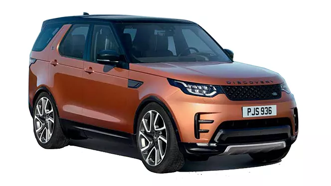
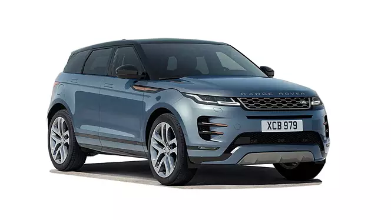

<!DOCTYPE html>
<html lang="en">

<head>
    <meta charset="UTF-8">
    <meta name="viewport" content="width=device-width, initial-scale=1.0">
    <title>Document</title>
    <link rel="stylesheet" href="toyota.css">
</head>

<body>

</html>
<div class="progress-bar"></div>
<div class="navbar">
    <div class="logo-container">
        
        <P>
            <H2>LAND ROVER</H2>
        </P>
        <!-- You can add more items to the navbar here if needed -->
    </div>
    <section>
        <h1>"Explore LAND ROVER'S iconic models </h1>
        <div class="card-container">

            <div class="card">
                <h2>Toyota Innova Crysta</h2>
                
                <p>The Innova Crysta combines space, comfort, and power, making it an ideal family car. Its refined interior and smooth ride have made it a top choice in the MPV segment.</p>
                <button>Know more</button>
            </div>
            <div class="card">
                <h2>Toyota Hilux</h2>
                
                <p>Renowned for its durability, the Hilux is a versatile pickup truck that can handle tough terrains with ease. It’s a go-to choice for those needing a reliable workhorse without sacrificing comfort.</p>
                <button>Know more</button>
            </div>
            <div class="card">
                <h2>Toyota Hilux</h2>
                
                <p>Renowned for its durability, the Hilux is a versatile pickup truck that can handle tough terrains with ease. It’s a go-to choice for those needing a reliable workhorse without sacrificing comfort.</p>
                <button>Know more</button>
            </div>

            <div class="card">
                <h2>Toyota Hilux</h2>
                
                <p>Renowned for its durability, the Hilux is a versatile pickup truck that can handle tough terrains with ease. It’s a go-to choice for those needing a reliable workhorse without sacrificing comfort.</p>
                <button>Know more</button>
            </div>

        </div>
        <a href="logo.html" class="back-button">&#8592;</a>